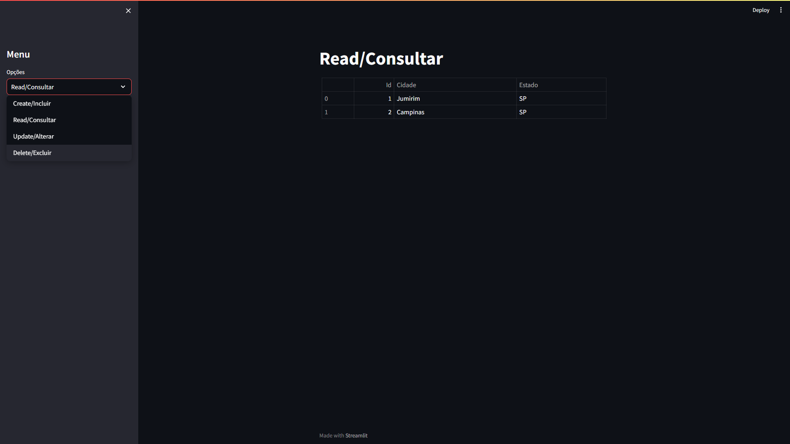

Olá, eu sou o Enzo
DESENVOLVEDOR FRONT-END
Sou estudante de engenharia de software na Puc Campinas.
Buscando oportunidades para aprender
cada vez mais e crescer profissionalmente na área.
Com aptidão para todas as áreas da tecnologia.

Sobre Mim
Olá, eu sou o Enzo, estudante de engenharia de software na Puc-Campinas, apaixonado por tecnologia e desenvolvimento, Buscando me desenvolver tecnicamente e profissionalmente para o mercado de trabalho, disposto a enfrentar qualquer problema e dificuldade para aprender cada vez mais.
Além da faculdade busco me desenvolver com cursos externos como HarvardX - CS50's Introduction to Computer Science e um nivel avançado de Inglês.
Algumas tecnologias que estou familiarizado são Html e Css, Sql, Python e C/C++, enquanto o Dart e o JavaScript / TypeScript estão no meu foco de estudo.
Projetos
O projeto apresenta uma companhia aérea oferecendo tudo que o usuario precisa saber sobre voos.
O projeto apresenta um software que calcula o nivel de qualidade do ar com base em particulas presente na atmosfera.

O projeto apresenta um CRUD feito em Python(streamlit e pandas) e MySQL.